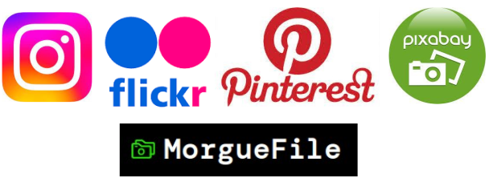

Un elemento multimedia es aquel que emplea diferentes medios de expresión físicos o digitales. (De ahí "multimedios").
Los archivos multimedia contienen un volumen importante de información, y para poderlo manipular fácilmente se compacta dicho contenido.
El proceso de comprimir y descomprimir la información multimedia se realiza mediante códecs; pero hay que tener cuidado porque es posible que se pierda información.
Qué es (@queescom). ¿Qué es un archivo multimedia? 📁 Descubre la importancia de estos archivos en informática 📁
Imágenes
Los principales formatos de imagen son:
Formato
Características
Extensiones
BMP (BitMaP)
Formato poco eficiente de imágenes sin comprimir nativo de Windows
.bmp .dib
GIF (Graphics Interchange Format)
Formato comprimido (con o sin pérdida de información) que permite transparencias y animación
.gif
JPG (Joint Photographic experts Group)
Formato comprimido con pérdida, pero buena relación calidad/tamaño
.jpg .jpe .jpeg .jfi .jfif .jif
PNG (Portable Networks Graphics)
Formato comprimido sin pérdida que fusiona las ventajas del GIF y el JPG, admite transparencias y una amplia gama de colores
.png
TIFF (Tagged Image File Format)
Formato con o sin compresión que permite almacenar la imagen en capas separadas por etiquetas.
.tif .tiff
Editores famosos de imágenes son:
GIMP: Licencia GNU/GPL. Es el programa de manipulación de gráficos disponible en más sistemas operativos (Unix, GNU/Linux, FreeBSD, Solaris, Microsoft Windows y macOS, entre otros).
Adobe Photoshop: Editor de fotografías desarrollado por Adobe Systems Incorporated. Usado principalmente para el retoque de fotografías y gráficos, su nombre en español significa "tienda de fotos". Es conocido mundialmente y se ha convertido en una marca de uso común, lo que lleva a su uso como un verbo ("photoshopear").
Logos de Gimp y Photoshop(Todos los derechos reservados)
Repositorios de Imágenes:
Instagram: aplicación y red social de fotos y vídeos que permite tratar las imágenes y aplicar efectos.
Flickr: red social orientada a la fotografía y los vídeos, permite crear grupos y comunidades.
Pinterest: plataforma para compartir imágenes, permite crear y administrar tableros y colecciones de imágenes.
Pixabay: banco de fotografías, imágenes vectoriales e ilustraciones, con un potente buscador.
MorgueFile: repositorio de imágenes de alta calidad.

Logos de repositorios de imágenes(Todos los derechos reservados Instagram, Flickr, Pinterest, Pixabay, MorgueFile)
Sonido
Los principales formatos de sonido son:
Formato
Características
Extensiones
MP2 (MPEG-1 Audio Layer 2)
Formato comprimido con pérdida típico de la radio y la TDT (Televisión Digital Terrestre).
.mp2
MP3 (MPEG-1 Audio Layer 3)
Formato comprimido con pérdida típico de ordenadores y reproductores de música.
.mp3
ACC (Advanced Audio Coding)
Audio comprimido con pérdida de excepcional rendimiento y calidad, usado en conexiones por Internet.
.aac .m4a .m4b .m4p .m4v .m4r .mp4 .3gp
WMA (Windows Media Audio)
Audio comprimido con o sin pérdida, nativo de Windows, de peor calidad que el MP3.
.wma
WAV (WAVeform Audio Format)
Formato sin compresión de Microsoft e IBM usado para almacenar sonidos en el ordenador. Gran tamaño de ficheros.
.wav
Repositorios de audio:
Jamendo: música libre, bajo licencia Creative Commons. Los artistas pueden subir allí las canciones y los usuarios escucharlas online os descargarlas.
Free Music Archive: catálogo de más de 100.000 canciones en formato MP3 y licencia Creative Commons.
Freesound: contiene archivos de diverso tipo (efectos, sonidos ambientales,...) catalogados, empaquetados y etiquetados por temática.
Logos de repositorios de sonido(Todos los derechos reservados Jamendo, FMA, Freesound)
Vídeos
Un archivo contenedor es el que almacena información de diferente naturaleza de forma combinada, es el caso de los archivos de vídeo, que contienen audio e imágenes en movimiento (e incluso otros elementos: subtítulos-texto,...).
Para comprimir los archivos de vídeo se usan códecs, destacando los códecs: MPEG-2, Divx, o Xvid.
Principales formatos de archivo contenedor (vídeo):
Formato de contenedor
Características
AVI (Audio Vídeo Interleave)
Contenedor de una capa de vídeo y varias capas de audio.
MPG (MPEG-2)
Contenedor de audio y vídeo, permite una alta calidad, por ello puede usarse en televisión digital y plataformas de alta definición.
FLV (FLash Video)
Contenedor de audio y vídeo para transmitir por Internet, compatible con la mayoría de sistemas operativos.
3GP (3rd Generation Partnership project)
Contenedor de audio y vídeo pensado para dispositivos portátiles, móviles y videoconsolas.
MP4 (MPEG-4 Parte 14)
Contenedor de audio y vídeo capaz de almacenar más contenido: menús, subtítulos,...
MOV (MOVie file format)
Contenedor Multimedia de dispositivos Apple, se edita/reproduce con la aplicación QuickTime.
Repositorios de vídeo:
YouTube: ampliamente utilizado para vídeos de todos los tamaños (sin función de descarga). Pueden agruparse los vídeos en listas de reproducción. Es fácil de "incrustar" en otras páginas.
Vimeo: red social orientada a compartir vídeos de alta calidad.
TikTok: red social de origen chino para vídeos cortos en vertical.
Logos de repositorios de vídeo(Todos los derechos reservados YouTube, Vimeo TikTok)
Los derechos de autor
Gran parte del contenido multimedia con el que interactuamos está sujeto a derechos de autor, para integrarlos en nuestras producciones audiovisuales debemos siempre obtener primero el permiso del autor/creador del material.
Creative Commons es una organización sin fines de lucro dedicada a promover el acceso y el intercambio de cultura. Desarrolla un conjunto de instrumentos jurídicos de carácter gratuito que facilitan usar y compartir tanto la creatividad como el conocimiento. Todo lo licenciado bajo Creative Commons no requiere el el permiso expreso del autor, pero sí que lo compartamos cumpliendo las normas de la licencia Creative Commons con las que se ha publicado.
Visualiza el siguiente vídeo para comprender mejor los derechos de autor: